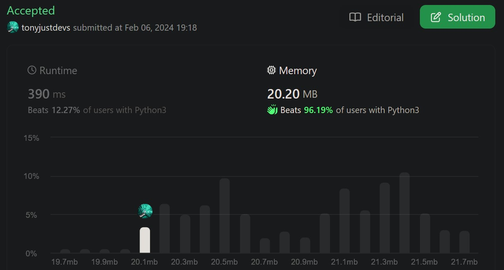

class MinStack():
def __init__(self):
self.stack = [] # create empty list
def push(self, val: int) -> None:
self.stack.append(val) # add value to end of list
def pop(self) -> None:
self.stack.pop() # remove last val of the list
def top(self) -> int:
return self.stack[-1] # in a list, top of stack is the last item list[-1]
def getMin(self) -> int:
return min(self.stack)
link to the submission, you can see the question but a login is required to see my results
1. Problem Description
Design a stack that supports push, pop, top, and retrieving the minimum element in constant time.
Implement the MinStack class:
1. MinStack() initializes the stack object.
2. void push(int val) pushes the element val onto the stack.
3. void pop() removes the element on the top of the stack.
4. int top() gets the top element of the stack.
5. int getMin() retrieves the minimum element in the stack.
1.1 LeetCode example
Input:
["MinStack","push","push","push","getMin","pop","top","getMin"]
[[],[-2],[0],[-3],[],[],[],[]]
Output:
[null,null,null,null,-3,null,0,-2]
2. Analysis
I’ve decomposed the Inputs (code + variables) and expected outputs (stack and return values) for each line of code run.
[Future Iteration 1]: Learn how to assert or include code that checks inputs what they are expected in an automatic way (The Output_Mine should be filled later hopefully automatically. For now, I eyeball the results and have LeetCode accept whether its passing or failing)
[Future Iteration 2]: I’m using Python Lists, I could do the same attempt with chr and string types as parentheses are simply characters.
2.1 Summary Table
| Python_Executed | Stack_Expected | Output_Expected | Output_Mine |
|---|---|---|---|
| MinStack minStack = new MinStack(); | [] | null | asdf |
| minStack.push(-2); | [-2] | null | asdf |
| minStack.push(0) | [0,-2] | null | asdf |
| minStack.push(-3); | [-3,0,-2] | null | asdf |
| minStack.getMin() | [-3,0,-2] | -3 | asdf |
| minStack.pop() | [0,-2] | null | asdf |
| minStack.top() | [0,-2] | 0 | asdf |
| minStack.getMin() | [0,-2] | -2 | asdf |
3. Code
Write the MinStack() class and its requried methods.
4. Test Functionality
minStack = MinStack()minStack.push(-2);minStack.push(0);
minStack.stack[-2, 0]minStack.push(-3);
minStack.stack[-2, 0, -3]minStack.getMin() # // return -3
# minStack.stack-3minStack.pop();
minStack.stack[-2, 0]minStack.top() # return 00minStack.getMin() # return -2-25. Submit
The code is slow but great memory management.
At the my current level, I’m happy to simply solve the problems. I don’t usually solve Mediums that easily.

6. Some Commentary
The question is framed from a Java’s perspective hence there are types in front of each declaration:
- void pop()
- int top()
- new MinStack()
Note: I’ve never touched Java 🤭.
Java is a Static-Typed whilst Python is a Dynamically-Type.
- Java requires variables and method return values be explicitly declared at compile-time.
- Python data types are determined at runtime.
- Python doesn’t require explicit type declarations for variables, function return types, or when creating objects.
That is, since I’m using Python, so I won’t need to declare my return types when creating a method of a class.